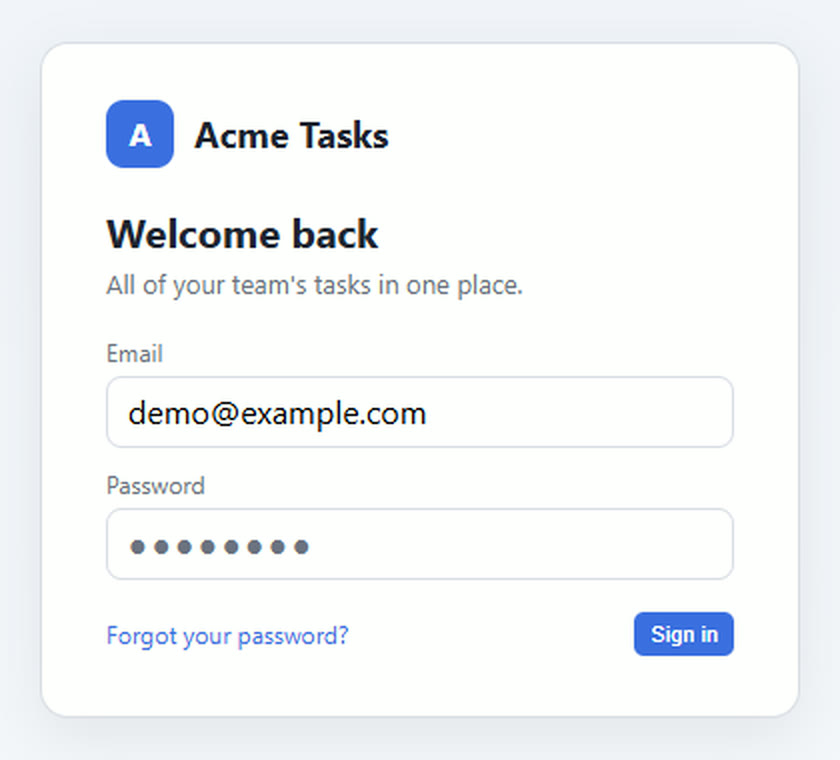
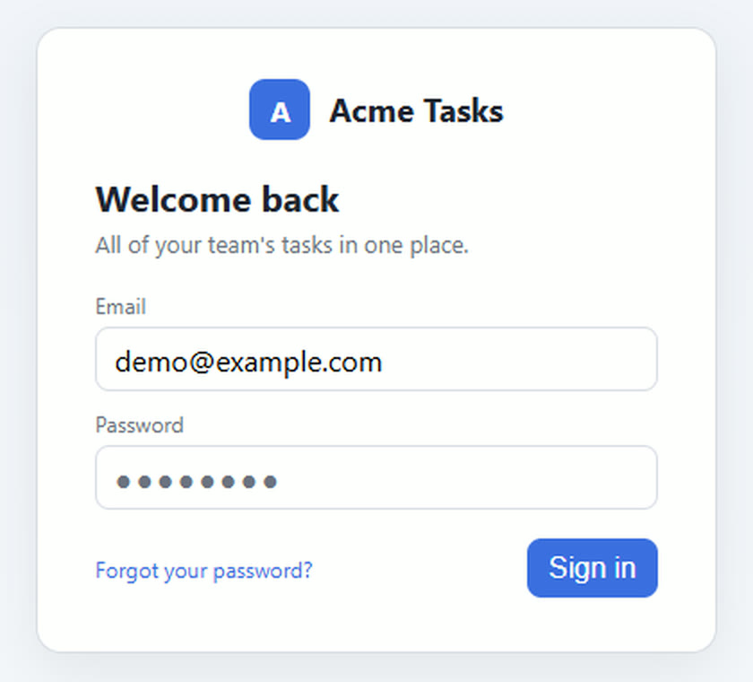

Backseat AI 소통기
고칠 곳을 표시하고,
말로 설명하세요.
고칠 곳을 가리키며 말하면, 각 표시와 설명을 짝지어 AI 코딩 도구에 전달합니다.
예를 들면“이 버튼은 더 크게. 로고는 가운데로.”
무료 · 오픈소스(MIT) · Windows 64비트 · v0.5.0, 약 243MB
코드 서명 전이라 처음 실행할 때 Windows 경고가 뜰 수 있습니다. 설치 안내 보기
macOS·Linux 미리보기판도 있습니다.
실제 앱을 녹화한 20초 요약이며 소리가 없습니다. 소리가 있는 영상은 50초 시연에서 볼 수 있습니다.
이렇게 고쳐졌습니다
버튼에 동그라미를, 로고에 번호와 화살표를 그리며 “이 로그인 버튼이 너무 작아요. 1.5배쯤 키워 주세요. 로고를 가운데로 옮겨 주세요.”라고 말해 Codex CLI에 보냈습니다.


표시와 설명을 받은 Codex가 수정한 결과입니다. Codex CLI를 한 번 실행한 실제 화면을 같은 위치, 같은 배율로 잘랐습니다. Backseat은 내용을 전달할 뿐, 코드를 직접 고치지 않습니다.
이렇게 씁니다
먼저 AI 코딩 도구에서 수정할 프로젝트를 열어 두세요.
-
화면을 캡처합니다
고칠 화면에서 단축키를 누르고, 보여 줄 부분을 마우스로 드래그하세요. 편집 창이 바로 열립니다.
영역 캡처 Ctrl+Shift+A · 창 캡처 Ctrl+Shift+W
-
표시하며 설명합니다
화살표, 번호, 펜, 글자로 고칠 곳을 표시하세요. 녹음을 켜고 그리면서 말하면, 문장마다 그때 그리던 표시와 짝지어집니다.
음성은 선택입니다. 한 줄 메모만 적거나 표시만 해서 보내도 됩니다.
녹음 M · 음성은 내 PC에서 텍스트로 변환합니다.
-
AI에게 전달합니다
보내기를 누르면 최근에 쓰던 AI 창의 입력란에 붙여 넣습니다. 들어간 내용을 확인한 뒤, 그 AI 창에서 직접 제출하세요.
보내기 Enter · 무엇이 들어가는지는 보내는 곳마다 다릅니다.
단계별 영상 보기 (영상 3개)
어떤 AI 도구와 쓸 수 있나요?
보내기를 누르면 최근에 쓰던 AI 도구 창에 붙여 넣습니다. 다른 창으로 보내려면 편집 창 오른쪽 위의 보낼 곳 표시를 누르거나 Ctrl+T로 고르세요.
캡처부터 AI 수정 결과까지 확인한 도구: Codex CLI
- 사용 확인 보낸 내용을 AI가 읽고 수정까지 마치는 것을 확인했습니다.
- 일부 확인 붙여 넣기 같은 일부 단계만 확인했고, 제한이 있습니다.
- 미검증 실제 전달을 아직 확인하지 않았습니다.
| 도구 | 전달하도록 설계된 내용 | 확인 수준 | 확인한 내용과 제한 |
|---|---|---|---|
| Codex CLI터미널 | 요청 문장과 파일 경로 | 사용 확인 | 캡처부터 Codex가 페이지를 고치기까지 확인했습니다. |
| ChatGPT 데스크톱 앱 | 이미지와 요청 문장 | 일부 확인 | 시험에서 글자만 들어가고 이미지는 붙지 않았습니다. |
| 브라우저의 ChatGPT 탭 | 이미지와 요청 문장 | 일부 확인 | 붙여 넣기까지만 시험했습니다. AI의 답변과 수정은 확인하지 않았습니다. |
| Claude 데스크톱 앱 | 이미지와 요청 문장 | 일부 확인 | 입력란을 찾는 단계까지만 시험했고, 붙여 넣지는 않았습니다. |
| Claude Code터미널 | 요청 문장과 파일 경로 | 미검증 | 터미널로 인식하지만, 실제 전달은 확인하지 않았습니다. |
| 브라우저의 Claude·Gemini·Copilot 탭 | 이미지와 요청 문장 | 미검증 | 탭 제목으로 알아보는 규칙만 있습니다. |
| Cursor, VS Code, Windsurf, Zed | 요청 문장과 파일 경로 | 미검증 | 창을 알아보는 규칙만 있습니다. |
위 시험은 Windows 10에서 수행했습니다. 미검증 도구는 실제 전달을 확인하지 않았습니다. 붙여 넣기를 확인한 것과 AI가 내용을 읽고 수정까지 마친 것은 다른 수준입니다.
- 붙여 넣기까지만 합니다. 제출은 그 AI 창에서 직접 하세요.
- 입력란을 확인하지 못하면 클립보드에 준비해 둡니다. 입력란을 클릭하고 Ctrl+V를 누르세요.
- 비밀번호 입력란으로 확인되면 붙여 넣지 않습니다.
전달 방식과 보낼 곳 자세히 보기
무엇이 들어가나요?
- 터미널과 코드 편집기에는 요청 문장과 함께 표시한 이미지·요청서(brief.md)의 파일 경로가 들어갑니다. 에이전트가 내 PC의 파일을 읽을 수 있어야 합니다.
- 채팅 앱과 브라우저에는 표시한 이미지와 요청 문장이 들어가도록 만들었습니다. 채팅 AI는 내 PC의 파일을 열 수 없기 때문입니다.
- 아무것도 그리거나 말하지 않고 보내면 요청 문장 없이 이미지만(터미널에는 이미지 경로만) 보냅니다.
- MCP를 설정한 에이전트는 Backseat에서 자료를 직접 가져갈 수 있습니다. 쓰지 않아도 됩니다. MCP 설정 방법
보낼 곳은 어떻게 정하나요?
- 자동으로 고르는 곳은 최근에 쓰던 AI 도구 창뿐입니다. 방금 캡처한 웹페이지나 메신저는 자동으로 고르지 않습니다.
- 메신저를 비롯한 다른 창도 목록에서 직접 고르면 보낼 수 있습니다. 보낼 곳이 정해지지 않으면 붙여 넣지 않고 클립보드에만 준비합니다.
- 붙여 넣기 직전에 커서가 있는 입력란을 확인합니다. Windows가 비밀번호 칸이라고 알려 주거나 입력란인지 확인할 수 없으면 멈춥니다. 터미널 안에서 묻는 비밀번호는 구분하지 못합니다.
- 편집 창 아래에는 저장, 클립보드 준비, 보낼 곳 확인, 입력란 확인, 붙여넣기 명령 전송처럼 실제로 거친 단계만 표시합니다. 멈췄다면 이유와 다음에 할 일을 알려 줍니다.
로그인 페이지를 직접 골라 보냈지만 비밀번호 칸이라 멈추는 장면입니다. 목록의 다른 창 이름은 흐리게 처리했습니다.
50초 시연
캡처하고 말로 설명한 내용이 AI 창으로 가고, Codex가 페이지를 고치기까지 처음부터 끝까지 보여 줍니다. 소리가 있습니다.
실제 앱을 스크립트로 조작해 녹화했습니다. 음성은 TTS(합성 음성)이고, 화면의 앱은 영어 설정, 자막은 한국어입니다. 배경음악: Bertsz, “Corporate company introduction video”(CC0). 영어 자막 버전
설치 안내
Windows 10(64비트)에서 확인했습니다. Windows 11에서는 아직 확인하지 않았습니다.
-
설치 파일 받기
GitHub 릴리스 페이지에서
Backseat.Setup.0.5.0.exe(약 243MB)를 받으세요. 공식 배포 파일은 이 저장소의 릴리스에만 올립니다. -
설치 파일 실행하기
코드 서명 전이라 “Windows의 PC 보호” 화면이 뜰 수 있습니다. 게시자를 확인할 수 없다는 뜻입니다. 위 릴리스 페이지에서 받은 파일이고 계속하려면 “추가 정보”를 누른 뒤 “실행”을 선택하세요.
-
알림 영역에서 확인하고 시작하기
작업 표시줄 오른쪽 알림 영역에 이 아이콘이 생기면 준비된 것입니다. 마우스를 올리면 “Backseat — Ctrl+Shift+A로 캡처”라고 나옵니다. 보이지 않으면 작업 표시줄의 ^(숨겨진 아이콘 표시)를 누르세요.
큰 창이 열리지 않아도 정상입니다. 고칠 화면에서 Ctrl+Shift+A를 눌러 시작하세요. 아이콘을 클릭해도 캡처가 시작됩니다.
음성을 처음 녹음할 때 음성 인식 모델(약 0.9GB)을 한 번 더 내려받습니다. 음성을 쓰지 않으면 받지 않습니다.
Windows에 로그인할 때마다 켜지며, 자동 시작은 아이콘 메뉴의 “로그인 시 자동 시작”에서 끌 수 있습니다.
다운로드 파일 검증 방법 (선택)
받은 파일이 릴리스에 게시된 파일과 같은지 확인하는 방법입니다. PowerShell에서 아래 명령을 실행하세요.
Get-FileHash "$env:USERPROFILE\Downloads\Backseat.Setup.0.5.0.exe" -Algorithm SHA256v0.5.0의 SHA-256 값: 8B5E1225237FCC0E57CDFCBFF7F0D4988248C9FF3E7FFAA5A8B1635BC17F033B
값이 같으면 게시된 파일을 그대로 받았다는 뜻입니다. 프로그램이 안전하다는 보증은 아닙니다. 값이 다르면 실행하지 말고 다시 받거나 문제를 알려 주세요.
macOS·Linux 미리보기판 미리보기
캡처, 표시, 음성 받아쓰기, 저장, MCP는 Windows판과 같습니다. 보낼 곳을 고르고 입력란을 확인해 붙여 넣는 기능은 Windows 전용이라, 미리보기판에서는 보내기를 누르면 클립보드에 준비됩니다. AI 창에서 직접 붙여 넣으세요(macOS: Cmd+V, Linux: Ctrl+V). 창 캡처와 스크롤 캡처도 없습니다.
- macOS(Apple Silicon): dmg 받기(약 221MB). 받은 뒤 응용 프로그램 폴더로 옮기세요. Apple 공증을 받지 않은 앱이라 처음 열 때 막히면 시스템 설정 → 개인정보 보호 및 보안에서 “그래도 열기”를 누르세요. 처음 캡처할 때 화면 기록 권한, 처음 녹음할 때 마이크 권한을 허용해야 합니다.
- Linux(x64 AppImage): AppImage 받기(약 447MB). 실행 권한을 준 뒤(
chmod +x) 실행하세요. 알림 영역 아이콘이 보이려면 데스크톱에 AppIndicator 지원이 필요할 수 있고, Wayland 세션에서는 전역 단축키가 동작하지 않을 수 있습니다.
확인 범위: GitHub의 macOS·Linux 빌드 서버에서 패키지 자체 검사(캡처, 편집 창, 클립보드, 저장)만 통과했습니다. 실제 Mac·Linux PC에서는 아직 확인하지 않았습니다. 버전 v0.6.0-preview.1 · 릴리스 페이지 · 문제가 있으면 알려 주세요.
자주 묻는 질문
음성 기능을 처음 쓸 때 무엇을 내려받나요?
처음 녹음하면 음성 인식 모델(Whisper small, 약 0.9GB)을 한 번 내려받습니다. 그 뒤로 음성은 내 PC에서 텍스트로 변환합니다. 클라우드 음성 인식을 따로 설정한 경우에만 음성을 그 서비스로 보냅니다. Backseat이 AI 창에 보낸 내용은 연결한 AI 서비스가 처리합니다.
받아쓴 문구가 틀리면 어떻게 하나요?
편집 창에서 받아쓴 문구를 직접 고칠 수는 없습니다. 대신 이렇게 하세요.
- 한두 단어만 틀렸다면 편집 창 아래의 한 줄 메모 칸에 바른 내용을 적어 함께 보내세요.
- 많이 틀렸다면 녹음(M)을 다시 하세요. 새 녹음이 이전 녹음과 받아쓴 내용을 대신하고, 직접 바꾼 연결도 초기화됩니다.
요청서에는 자동으로 받아쓴 내용이라 숫자나 이름이 틀릴 수 있다는 안내가 함께 들어갑니다.
설명이 엉뚱한 표시에 연결됐으면요?
타임라인(L)을 열고, 음성 줄의 문장 막대를 연결할 표시의 막대 위로 끌어다 놓으세요. 음성 줄의 빈 곳에 놓으면 자동 연결로 돌아갑니다.
자동으로 붙여 넣어지지 않으면요?
입력란을 확인하지 못하면 붙여 넣지 않고 클립보드에 준비해 둡니다. AI 창의 입력란을 클릭한 뒤 Ctrl+V를 누르세요. 멈춘 이유는 편집 창 아래에 나옵니다. Claude·ChatGPT 데스크톱 앱처럼 입력란이 여러 개인 앱에서 자주 생깁니다.
왜 AI 창에서 직접 제출하나요?
기본 설정에서 Backseat은 붙여 넣기만 하고 제출하지 않습니다. 보내기 전에 들어간 내용을 한 번 확인할 수 있게 하려는 것입니다. 알림 영역 메뉴에서 “전송 후 Enter 자동 입력”을 켤 수 있지만, 보낼 곳과 입력란을 모두 확인한 경우에만 누릅니다.
편집 창의 “붙여넣기를 시도했어요”는 무슨 뜻인가요?
붙여넣기 명령을 보냈다는 뜻입니다. 실제 이미지와 글자가 입력됐는지는 확인하지 못하므로 AI 창에서 확인해 주세요. MCP로 연결한 에이전트가 자료를 가져가면 “AI가 자료를 가져갔어요”라고 따로 표시합니다.
캡처한 자료는 어디에 남나요?
보낼 때마다 내 PC의 사진 폴더 아래 Backseat\sessions에 표시한 이미지, 원본 화면, 요청서(brief.md), 녹음과 받아쓴 내용이 저장됩니다.
어떤 운영체제에서 쓸 수 있나요?
정식판은 Windows 64비트용이며 Windows 10에서 확인했습니다. Windows 11에서는 아직 직접 확인하지 못했습니다. macOS(Apple Silicon)와 Linux(x64)는 자동 붙여넣기가 없는 미리보기판이 있고, 실제 Mac·Linux PC에서는 아직 확인하지 않았습니다.
Windows용 다운로드
v0.5.0 · 약 243MB · Windows 64비트 · 무료 · 오픈소스(MIT) · 설치 안내